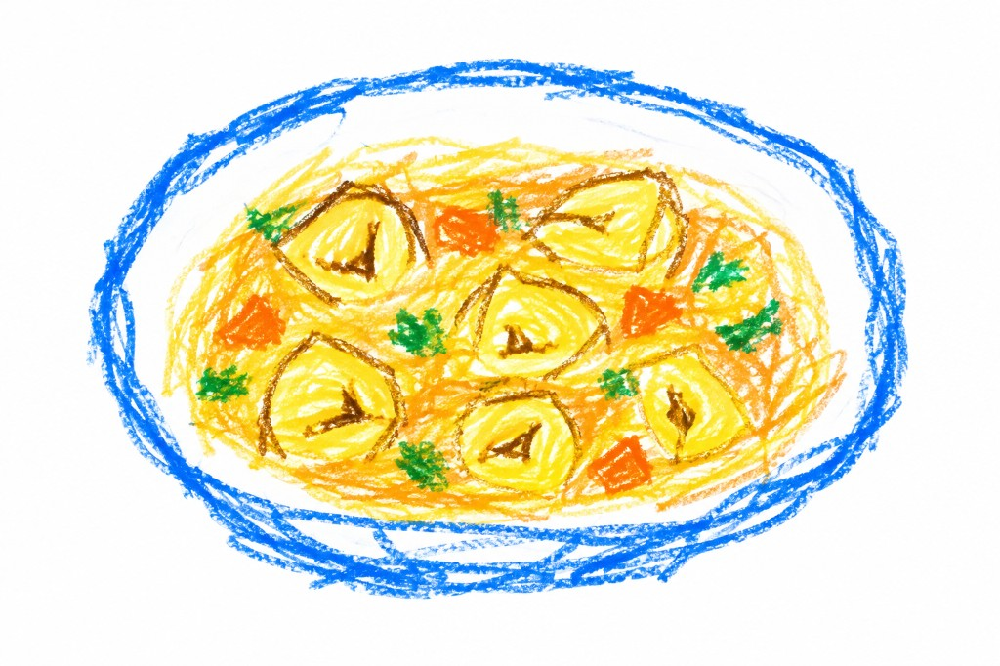

Tortellini in brodo
Ingredienti
- 400 g di tortellini
- 1,5 l di brodo di carne
- Parmigiano Reggiano grattugiato
- Sale
Preparazione
Porta il brodo a ebollizione e assaggia per controllare il livello di sale.
Aggiungi i tortellini al brodo bollente e cuocili seguendo il tempo indicato sulla confezione.
Servi i tortellini ben caldi nel loro brodo e aggiungi il Parmigiano Reggiano.
← Torna alle ricette